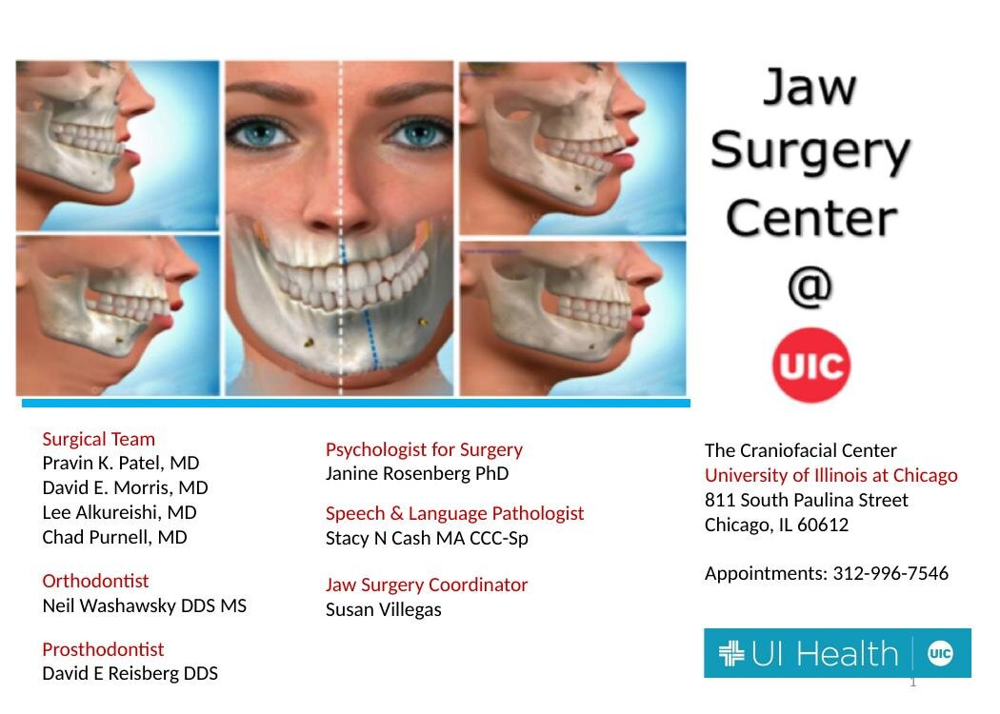
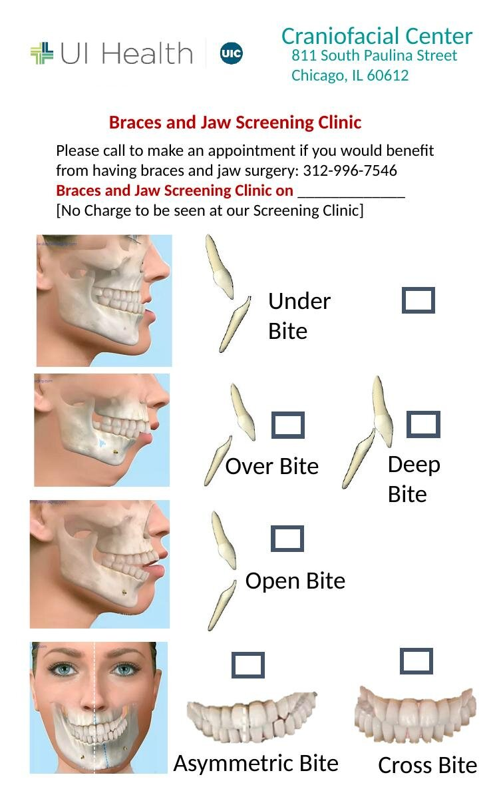
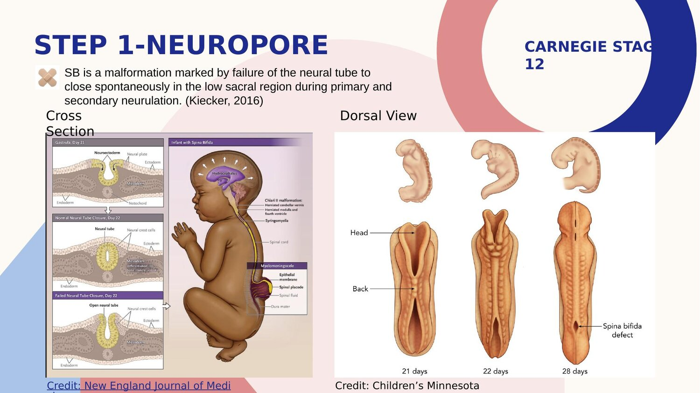
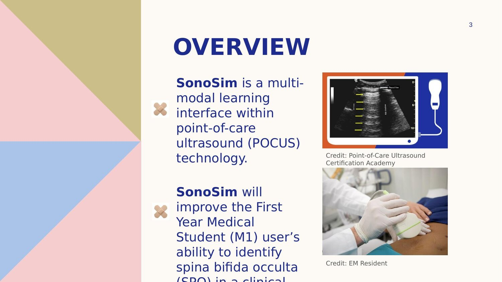

College of Medicine & Health Communication
Patient education · clinical communication · medical-education design
Design and communication work for clinical and public-health audiences, where the test is whether a patient, a family, or a student actually understands something complex and can act on it.
A selection is below. I do ongoing design and communications work for the College of Medicine, and I am adding more of it here.
Jaw Surgery Patient Manual — UIC Craniofacial Center
Patient education · surgical communication
A patient-education manual that explains corrective jaw surgery to patients and families: the types of jaw and bite problems, the anatomy involved, what each surgery does, the benefits and downsides, and how to prepare for and recover from the procedure. The challenge was taking a complex surgical and orthodontic subject and making it clear, reassuring, and usable for a non-medical reader facing a major decision. It pairs plain-language explanation with anatomical diagrams, and links to a patient-specific 3D surface model.



Medical Education & Health Communication
Teaching complex clinical ideas

SonoSim. An instructional-design project for a point-of-care-ultrasound learning interface to help first-year medical students identify spina bifida occulta before clinical rounds. I worked through the learning goals and objectives, the anatomy and visual problems, and the site map, wireframes, and storyboard, the same audience-first, structured approach I bring to enablement and training.
